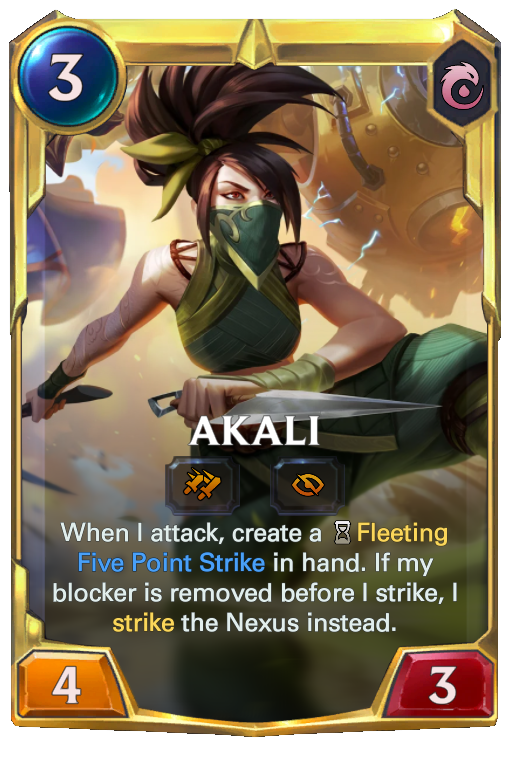
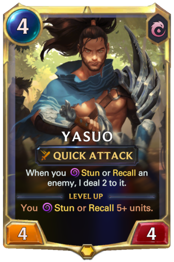
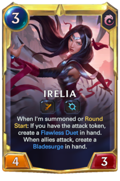
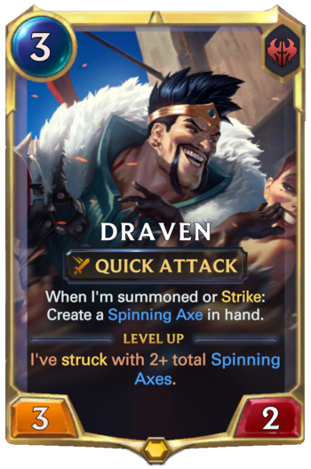
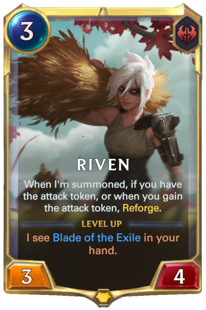
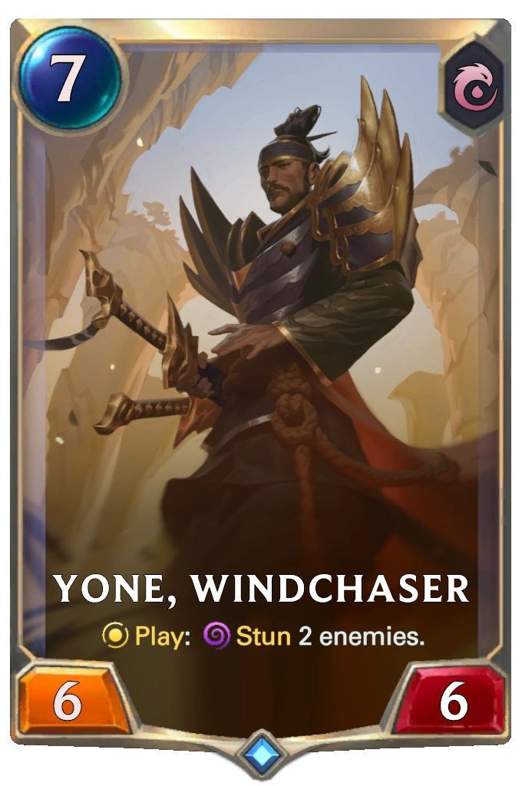

-

Abandoning the Kinkou Order and her title of the Fist of Shadow, Akali now strikes alone, ready to be the deadly weapon her people need. Though she holds onto all she learned from her master Shen, she has pledged to defend Ionia from its enemies, one kill at a time. Akali may strike in silence, but her message will be heard loud and clear: fear the assassin with no master.
-

An Ionian of deep resolve, Yasuo is an agile swordsman who wields the air itself against his enemies. As a proud young man, he was falsely accused of murdering his master. Unable to prove his innocence, he was forced to slay his own brother in self defense. Even after his master's true killer was revealed, Yasuo still could not forgive himself for all he had done, and now wanders his homeland with only the wind to guide his blade.
-

The Noxian occupation of Ionia produced many heroes, none more unlikely than young Irelia of Navori. Trained in the ancient dances of her province, she adapted her art for war, using the graceful and carefully practised movements to levitate a host of deadly blades. After proving herself as a fighter, she was thrust into the role of resistance leader and figurehead, and to this day remains dedicated to the preservation of her homeland.
-

In Noxus, warriors known as reckoners face one another in arenas where blood is spilled and strength tested—but none has ever been as celebrated as Draven. A former soldier, he found that the crowds uniquely appreciated his flair for the dramatic, not to mention the spray of blood from each of his spinning axes. Addicted to the spectacle of his own brash perfection, Draven has sworn to defeat whomever he must to ensure that his name is chanted throughout the empire forever more.
-

Once a swordmaster in the warhosts of Noxus, Riven rose through the ranks on the strength of her conviction and brutal efficiency, and was rewarded with a legendary runic blade and a warband of her own. However, on the Ionian front, Riven's faith in her nation was tested and ultimately broken. She severed all ties to the empire, seeking to find her place in a shattered world, even as rumors abounded that Noxus had been reforged. Now forced to return in chains, she faces the judgment of her former homeland...
-

In life, he was half-brother of Yasuo, and renowned student of his village's sword school. But upon his death at the hands of his brother, he found himself hunted by a malevolent entity of the spirit realm, and was forced to slay it with its own sword. Now, cursed to wear its demonic mask upon his face, Yone tirelessly hunts all such creatures in order to understand what he has become.